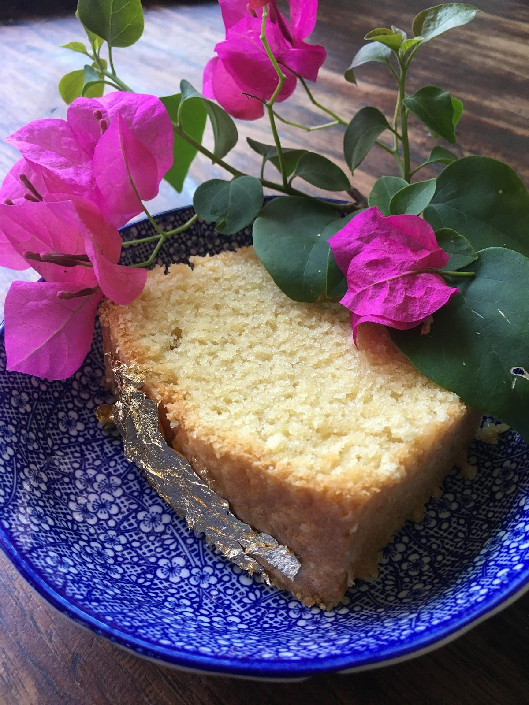

Luxurious Cake
By- MS Manon
Story :
- Growing up in the South part of the Netherlands I have tasted many cakes and pies. The Dutch have special pies for birthdays,
weddings and even for funerals.As a child I prefered cakes because the pies always have some kind of canned fruit on them which
I felt ruined everything.This Swedish recipe with no added milk is the best I have made myself so far, it really is a luxurious cake 😃!

Ingredients :
- 200g Butter
- 3 eggs
- 2,5 dl sugar
- 4 dl flower
- 1 tsp baking powder
- 2 tsp vanilla sugar
Instructions :
- preheat the oven to 175 degrees celsius
- butter a 1,5 liter cake form
- whip the butter and sugar till it�s fluffy
- add the eggs 1 by 1, mix in with a spoon
- mix the flower, baking powder and vanilla sugar in a separate bowl
- gently add the flour mixture, fold it into the wet ingredients
- bake in the middle of the oven for 55 - 60 min.
- Tips: Make sure all ingredients are at room temperature
Line the buttered cake form with breadcrumbs or shredded coconut